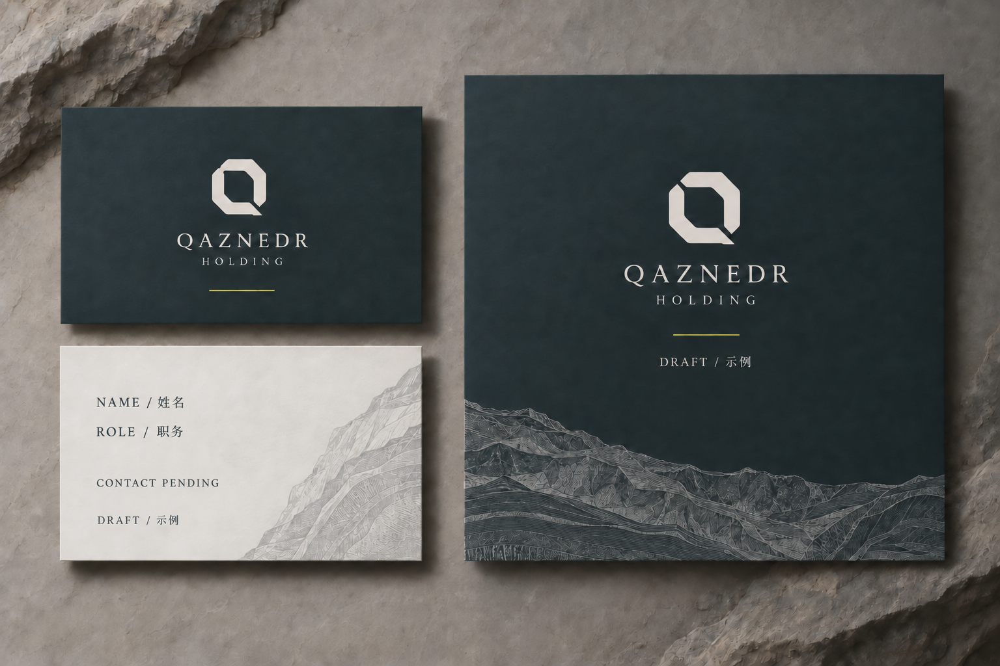
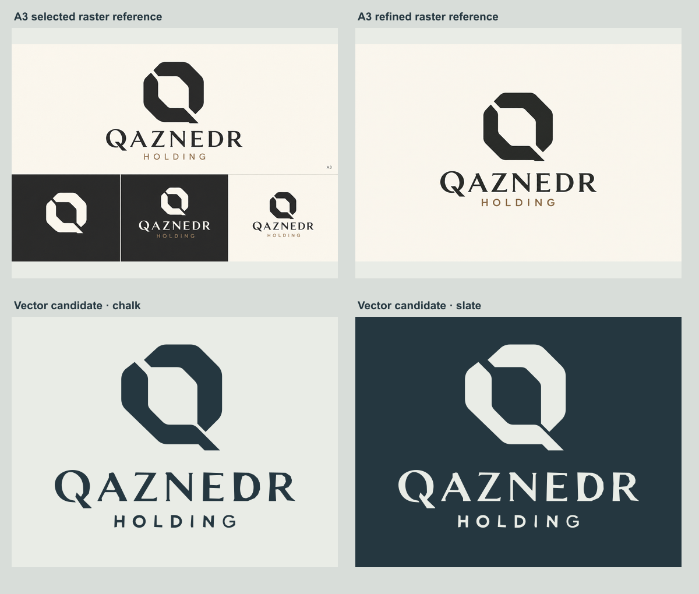
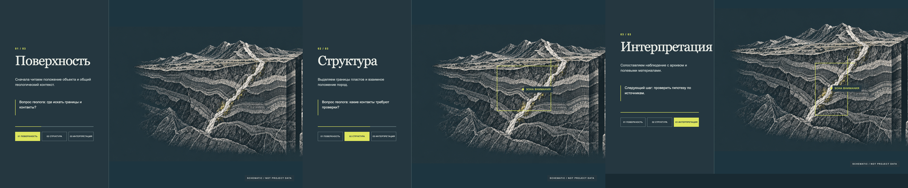

12
Страниц брендбука
Знак, палитра, наборные шрифты, сетка, графика, движение и международная подача. Версия для утверждения.
Открыть PDFУтверждённые «Контур» и «Сланец / сера» сохранены. Здесь — точная векторная версия для сверки, брендбук, фирменные носители и демонстрация геологической сцены.
Это доводка выбранного направления. Новые пропорции, наборные шрифты и носители представлены для твоего решения; разрешение работать самостоятельно не заменяет утверждение.


Вектор нужен, чтобы на сайте, в PDF и на аватаре использовался один знак. Сравнение ниже сохраняет выбранный рисунок сверху и показывает уточнённый кандидат снизу. Ранний бронзовый HOLDING в исходном рисунке заменён утверждённым D2.

Поверхность → структура → интерпретация. На десктопе состояние меняется при прокрутке; на телефоне — короткая последовательность с кнопками. Системная настройка уменьшенного движения сохраняет весь смысл статично.

Новое продолжение 08: три отдельно отрисованные части раскрываются независимо. Сравни с цельным разрезом 07; выбор движения ещё открыт.
12
Знак, палитра, наборные шрифты, сетка, графика, движение и международная подача. Версия для утверждения.
Открыть PDF9
Три иллюстрации в ширинах 640 / 960 / 1440, WebP. Композиция сохранена, каждый файл меньше 350 KiB.
Размеры и правила загрузкиПредложение Source Serif 4 + IBM Plex Sans. Локальные файлы и лицензии; китайский — системный CJK. Логотип имеет собственные векторные буквы.
Шрифты и источникиКарта страниц и компонентов, недостающий реальный контент, словарь RU / EN / 中文 и состояния интерфейса.
Китайское юридическое имя выбирается отдельно с переводчиком. До этого бренд остаётся латиницей. Реальные контакты, фото и данные проектов запрашиваются по реестру контента.